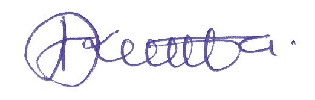

Msanifu:
Bw. Amani J. Kweka
Wachoraji:
Bw. Fikiri A. Msimbe (TET), Bw. Yohana P. Mwenda na Bw. Gwakisa U. Mwandoloma
Mratibu:
Bi. Vida A. Ngowi (TET)
Vilevile, TET inatoa shukurani kwa walimu wote na wanafunzi wa shule za msingi walioshiriki katika ujaribishaji wa kitabu hiki. Pia, TET inalishukuru shirika lisilo la kiserikali la “Room to Read” kwa ufadhili wa hatua za awali za uandishi wa kitabu hiki.
Mwisho, TET inaishukuru Serikali ya Jamhuri ya Muungano wa Tanzania kwa kutoa fedha zilizofanikisha kazi ya uandishi wa kitabu hiki.

Dkt. Aneth A. Komba
Mkurugenzi Mkuu
Taasisi ya Elimu Tanzania